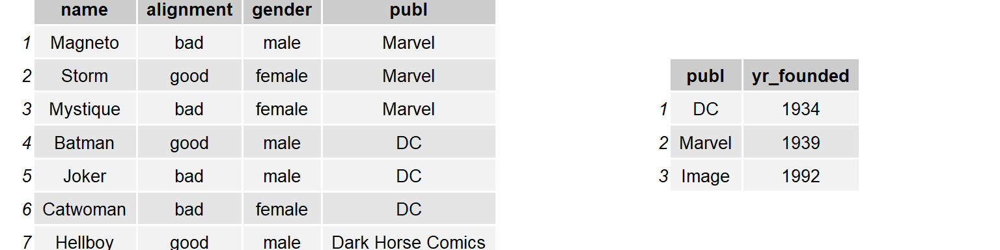

pivot_longer() – “lengthens” data, increasing the number of rows and decreasing the number of columns.
pivot_longer(data_frame, cols, ### columns selected to pivot into longer formatnames_to ="name", ### original column-names go to the new "name" columnvalues_to ="value") ### original column-values go to the new "value" column
Example 1
Recall table4a in the tidyverse package. This table is not tidy as the variable cases is scattered across two columns. In other words,
The column names (1999 and 2000) should be values of the year variable
The values (\(745, 2666, \cdots\)) should be values of the cases variable.
Example 1.1
table4a
library(tidyverse)table4a#> # A tibble: 3 × 3#> country `1999` `2000`#> <chr> <dbl> <dbl>#> 1 Afghanistan 745 2666#> 2 Brazil 37737 80488#> 3 China 212258 213766
Use pivot_longer() to “lengthen” the data table table4a
table4a %>%pivot_longer(cols =c(`1999`, `2000`), names_to ="year", values_to ="cases")#> # A tibble: 6 × 3#> country year cases#> <chr> <chr> <dbl>#> 1 Afghanistan 1999 745#> 2 Afghanistan 2000 2666#> 3 Brazil 1999 37737#> 4 Brazil 2000 80488#> 5 China 1999 212258#> 6 China 2000 213766
Create table4 by join the tidy versions of table4a and table4b
Use pivot_longer() to “lengthen” the data table table4a to table4a_tidy (variables: year and cases)
Use pivot_longer() to “lengthen” the data table table4b to table4b_tidy (variables: year and population)
Then join the two tidy tables to table4.
table4a_tidy <- table4a %>%pivot_longer(cols =c(`1999`, `2000`), names_to ="year", values_to ="cases")table4b_tidy <- table4b %>%pivot_longer(cols =c(`1999`, `2000`), names_to ="year", values_to ="population")table4 <-left_join(table4a_tidy, table4b_tidy)table4#> # A tibble: 6 × 4#> country year cases population#> <chr> <chr> <dbl> <dbl>#> 1 Afghanistan 1999 745 19987071#> 2 Afghanistan 2000 2666 20595360#> 3 Brazil 1999 37737 172006362#> 4 Brazil 2000 80488 174504898#> 5 China 1999 212258 1272915272#> 6 China 2000 213766 1280428583
pivot_wider()
pivot_wider() – “widens” data, increasing the number of columns and decreasing the number of rows.
names_from – the original column where the new columns names are from
values_from – the original column where the new columns values are from
Example 2
Recall table2. This table is not tidy as an observations is a country in a year, but each observation is spread across two rows. In other words,
The cases and population should be variable names
The values (\(745, 2666, \cdots\)) should be values of the cases or population variable.
Example 2.1
table2
table2#> # A tibble: 12 × 4#> country year type count#> <chr> <dbl> <chr> <dbl>#> 1 Afghanistan 1999 cases 745#> 2 Afghanistan 1999 population 19987071#> 3 Afghanistan 2000 cases 2666#> 4 Afghanistan 2000 population 20595360#> 5 Brazil 1999 cases 37737#> 6 Brazil 1999 population 172006362#> 7 Brazil 2000 cases 80488#> 8 Brazil 2000 population 174504898#> 9 China 1999 cases 212258#> 10 China 1999 population 1272915272#> 11 China 2000 cases 213766#> 12 China 2000 population 1280428583
Use pivot_wider() to “widens” the data table table2
library(tidyverse)table2 %>%pivot_wider(names_from = type, values_from = count)#> # A tibble: 6 × 4#> country year cases population#> <chr> <dbl> <dbl> <dbl>#> 1 Afghanistan 1999 745 19987071#> 2 Afghanistan 2000 2666 20595360#> 3 Brazil 1999 37737 172006362#> 4 Brazil 2000 80488 174504898#> 5 China 1999 212258 1272915272#> 6 China 2000 213766 1280428583
Separate
Turns a single character column into multiple columns:
separate_wider_delim() – splits by delimiter
separate_wider_position() – splits at fixed widths
separate_wider_regex() – splits with regular expression matches
Example 3
Recall table3. This table is not tidy as one column rate contains two variables cases and population. To fix this problem, we’ll need the separate-type functions.
table3 %>%separate_wider_delim(rate, delim ="/", names =c("cases", "population"))#> # A tibble: 6 × 4#> country year cases population#> <chr> <dbl> <chr> <chr> #> 1 Afghanistan 1999 745 19987071 #> 2 Afghanistan 2000 2666 20595360 #> 3 Brazil 1999 37737 172006362 #> 4 Brazil 2000 80488 174504898 #> 5 China 1999 212258 1272915272#> 6 China 2000 213766 1280428583
Using separate_wider_position() to separate the variable year in table3 to columns century (dropped) and year_last2.
table3 %>%separate_wider_position(year, c(2, year_last2 =2))#> # A tibble: 6 × 3#> country year_last2 rate #> <chr> <chr> <chr> #> 1 Afghanistan 99 745/19987071 #> 2 Afghanistan 00 2666/20595360 #> 3 Brazil 99 37737/172006362 #> 4 Brazil 00 80488/174504898 #> 5 China 99 212258/1272915272#> 6 China 00 213766/1280428583
unite()
unite() – a convenience function to paste together multiple columns into one.
unite(data_frame, cols, ### vector of columns to be combined sep)### separator
Example 4
Combine the century and year values in table5.
table5#> # A tibble: 6 × 4#> country century year rate #> <chr> <chr> <chr> <chr> #> 1 Afghanistan 19 99 745/19987071 #> 2 Afghanistan 20 00 2666/20595360 #> 3 Brazil 19 99 37737/172006362 #> 4 Brazil 20 00 80488/174504898 #> 5 China 19 99 212258/1272915272#> 6 China 20 00 213766/1280428583
unite() is the inverse of separate: it combines multiple columns into a single column.
We combine the century and year values.
table5 %>%unite(new, century, year)#> # A tibble: 6 × 3#> country new rate #> <chr> <chr> <chr> #> 1 Afghanistan 19_99 745/19987071 #> 2 Afghanistan 20_00 2666/20595360 #> 3 Brazil 19_99 37737/172006362 #> 4 Brazil 20_00 80488/174504898 #> 5 China 19_99 212258/1272915272#> 6 China 20_00 213766/1280428583
There is a understore between century and year above.
Remove the underscore
table5 %>%unite(new, century, year, sep ="")#> # A tibble: 6 × 3#> country new rate #> <chr> <chr> <chr> #> 1 Afghanistan 1999 745/19987071 #> 2 Afghanistan 2000 2666/20595360 #> 3 Brazil 1999 37737/172006362 #> 4 Brazil 2000 80488/174504898 #> 5 China 1999 212258/1272915272#> 6 China 2000 213766/1280428583
Understand joins
It’s rare that data analysis involves a single table of data. Multiple tables of data are called relational data.
For example, in the nycflights13 package, the airlines, airports, planes, weather are related to the flights data in the following way.
Different join functions
inner_join()
left_join()
right_join()
full_join()
Example 5
To learn how joins (left_join, right_join, inner_join, outer_join, etc.) works, we use the toy example and a visual representation below.
superheroes#> # A tibble: 7 × 4#> name alignment gender publ #> <chr> <chr> <chr> <chr> #> 1 Magneto bad male Marvel #> 2 Storm good female Marvel #> 3 Mystique bad female Marvel #> 4 Batman good male DC #> 5 Joker bad male DC #> 6 Catwoman bad female DC #> 7 Hellboy good male Dark Horse Comicspublishers#> # A tibble: 3 × 2#> publ yr_founded#> <chr> <int>#> 1 DC 1934#> 2 Marvel 1939#> 3 Image 1992
The key variable name is publ, which needs to be exactly the same in the two dataframes.
Quiz
Tibbles superheroes and publishers

Please match the output tables with the join functions used.
Quiz Solution
Tibbles superheroes and publishers
Please match the output tables with the join functions used.
Example 6.1 – inner_join()
superheroes %>%inner_join(publishers, by ="publ")#> # A tibble: 6 × 5#> name alignment gender publ yr_founded#> <chr> <chr> <chr> <chr> <int>#> 1 Magneto bad male Marvel 1939#> 2 Storm good female Marvel 1939#> 3 Mystique bad female Marvel 1939#> 4 Batman good male DC 1934#> 5 Joker bad male DC 1934#> 6 Catwoman bad female DC 1934
inner_join returns all rows from superheros where there are matching values in publishers.
We lose Hellboy as his publisher Dark Horse Comics does not appear in publishers.
Example 6.2 – left_join()
superheroes %>%left_join(publishers, by ="publ")#> # A tibble: 7 × 5#> name alignment gender publ yr_founded#> <chr> <chr> <chr> <chr> <int>#> 1 Magneto bad male Marvel 1939#> 2 Storm good female Marvel 1939#> 3 Mystique bad female Marvel 1939#> 4 Batman good male DC 1934#> 5 Joker bad male DC 1934#> 6 Catwoman bad female DC 1934#> 7 Hellboy good male Dark Horse Comics NA
left_join returns all rows from superheros.
We get all columns in superheros back, with the addition of variable yr_founded, which is unique to publishers.
Hellboy, whose publisher Dark Horse Comics does not appear in publishers, has an NA for yr_founded.
Example 6.3 – right_join()
superheroes %>%right_join(publishers, by ="publ")#> # A tibble: 7 × 5#> name alignment gender publ yr_founded#> <chr> <chr> <chr> <chr> <int>#> 1 Magneto bad male Marvel 1939#> 2 Storm good female Marvel 1939#> 3 Mystique bad female Marvel 1939#> 4 Batman good male DC 1934#> 5 Joker bad male DC 1934#> 6 Catwoman bad female DC 1934#> 7 <NA> <NA> <NA> Image 1992
right_join returns all rows from publishers.
We get all columns in publishers back, with the addition of variables name, alignment, gender, which is unique to superheroes.
Image, the publisher has no corresponding superhero, has NAs for name, alignment, gender.
Example 6.4 – full_join()
superheroes %>%full_join(publishers, by ="publ")#> # A tibble: 8 × 5#> name alignment gender publ yr_founded#> <chr> <chr> <chr> <chr> <int>#> 1 Magneto bad male Marvel 1939#> 2 Storm good female Marvel 1939#> 3 Mystique bad female Marvel 1939#> 4 Batman good male DC 1934#> 5 Joker bad male DC 1934#> 6 Catwoman bad female DC 1934#> 7 Hellboy good male Dark Horse Comics NA#> 8 <NA> <NA> <NA> Image 1992
rull_join returns all rows and columns from superheroes and publishers.
Where there are not matching values, use NA.
Reference books
R for Data Science: https://r4ds.hadley.nz/
Hands-on Programming with R: https://rstudio-education.github.io/hopr/
R Graphics Cookbook: https://r-graphics.org/
Statistical Inference via Data Science: A Modern Dive into R and the Tidyverse, by Chester Ismay, Albert Y. Kim